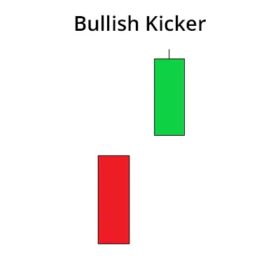

Das Bullish Kicker-Muster ist ein Handelsmuster, das das Fehlen eines Abwärtstrends auf
dem Aktienmarkt anzeigt und auf einen Aufwärtstrend hindeutet. Dieses Muster wird durch
zwei Kerzenständer gebildet. Der erste Kerzenständer ist bearish, und der zweite
Kerzenständer ist ein bullish Kerzenständer, der den ersten Kerzenständer
vollständig verschlingt.
Das Bullish Kicker-Muster ist ein starker Indikator für einen Aufwärtstrend. Wird
dieses Muster beobachtet, kann der Handel auf dem Aktienmarkt mit einem Aufwärtstrend erfolgen.